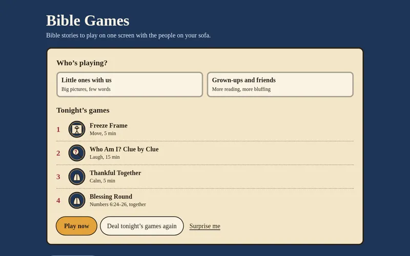
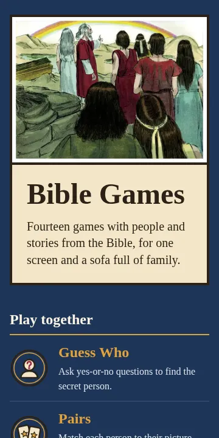

Bible Games
A family collection of Bible games: pass-and-play party games, board games like Pilgrim's Way, and active games for little ones.

What it is
Games built around people and stories from the Bible, made for one screen and the whole family. Some are pass-and-play party games, some are board games like Pilgrim's Way, and some get little ones up and moving.
Why I built it
I wanted games my boys could play with us in the evenings that are fun first and keep the real Bible text intact, with every round pointing back to the verse.
Screenshots

How it's built
Vue 3 and TypeScript, running in the browser with nothing to install. Illustrations are by Sweet Publishing, used under CC BY-SA.
Status and limits
A personal project that's live and still growing. It's designed for one shared device rather than multiple phones.